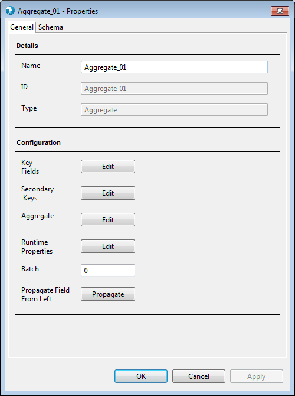
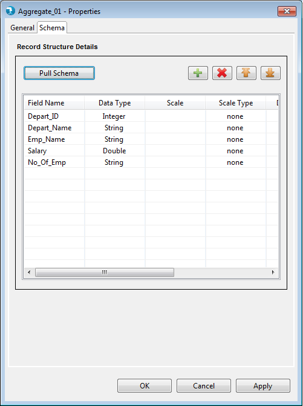

Properties for the Aggregate component can be viewed by double clicking the component on canvas. The properties contain a 'General' tab and a 'Schema' tab. Common and mandatory properties are present in the General tab. Schema tab displays the option to accept the field schema i.e. field name, data type, scale etc.
General Properties

Display
- Name - The Name field specifies the name of the component
- Base Type - Base Type signifies the category of the component. Aggregate is of base type Transform. This is a non editable field.
- Type - Type defines the type of component within the category. This typically is the name of the component. This is a non editable field.
Configuration
- Runtime Properties - Runtime properties are used to override the Hadoop configurations specific to this Aggregate component at run time. User is required to enter the Property Name and Property Value in the runtime properties grid.

- Key Field - Key Field opens up a grid that accepts the key fields for the aggregation operations. The records are grouped based on these key fields. The records are always sorted in ascending order on keys.

- Secondary Keys - Secondary keys opens up a grid that accepts the secondary key fields for the aggregation operations. Secondary key fields are used for ordering the input records within the groups defined by the 'Key Fields'. The user can specify the sort order for secondary key fields. The sort order can be either Ascending or Descending. The default sort order is ascending (Asc).

- Aggregate - Edit button opens up the 'Operation Editor' view, where the user can define the custom aggregation operation. The user can select the input fields needed for the aggregation operation, write custom operation classes (or select existing standard operation classes), extract the output fields all in the same view. Check Operation Class to know more about creating custom classes and using standard classes for aggregation operations.

- Phase - Phase accepts a numeric number starting from 0 and signifies the phase this component will execute in. The default value for phase is 0.
Schema tab:

User can define the schema for the out port of Aggregate component in this tab by specifying below attributes.
- Field Name - The name for the field.
- Data type - The data type for the field. The default data type is "String".
- Scale - The number of digits to the right of decimal point. Scale is defined for Double, Float or BigDecimal field.
- Scale Type – Scale Type accepts values as implicit or explicit for BigDecimal field and none for other data types. Explicit considers the length of '.' in precision and implicit ignores length of '.' precision for the BigDecimal field.
- Date Format - The format for date data type. Refer to java date formats page for acceptable date formats.
- Precision – The number of significant digits (all digits except leading zeros and trailing zeros after decimal point).
- Field Description – The description for the field.
Pull Schema – The schema defined in Operation Editor's output, will be pulled to the schema tab.